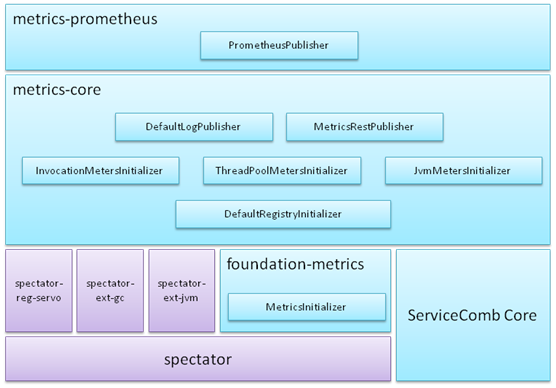

一、Metrics介绍

- 基于netflix spectator
- Foundation-metrics通过SPI机制加载所有MetricsInitializer实现，实现者可以通过MetricsInitializer中的getOrder规划执行顺序，order数字越小，越先执行。
- Metrics-core实现3类MetricsInitializer：
- DefaultRegistryInitializer: 实例化并注册spectator-reg-servo，设置较小的order，保证比下面2类MetricsInitializer先执行
- Meters Initializer: 实现TPS、时延、线程池、jvm资源等等数据的统计
- Publisher: 输出统计结果，内置了日志输出，以及通过RESTful接口输出
- Metrics-prometheus提供与prometheus对接的能力
二、统计项汇总
| Name | Tag keys | Tag values | 含义 |
|---|---|---|---|
| servicecomb.invocation | role | CONSUMER、PRODUCER | 是CONSUMER还是PRODUCER端的统计 |
| operation | ${microserviceName}.${schemaId}.${operationName} | 调用的方法名 | |
| transport | highway或rest | 调用是在哪个传输通道上发生的 | |
| stage | total | 全流程的统计 | |
| queue | 仅在producer端使用线程池时有意义表示调用在producer线程池中排队的统计 | ||
| execution | 仅在producer端有意义表示业务逻辑执行的统计 | ||
| status | http status code | ||
| statistic | count | 平均每秒调用次数，即TPS count=统计周期内的调用次数/周期（秒） |
|
| totalAmount | 单位为秒 totalAmount=统计周期内的调用耗时总时长/周期（秒） totalAmount除以count即可得到平均时延 |
||
| totalOfSquares | totalOfSquares=统计周期内的每一个调用耗时的平方之和/周期（秒） | ||
| max | 统计周期内最大的调用耗时，单位为秒 | ||
| threadpool.taskCount | id | ${threadPoolName} | 统计周期内平均每秒提交的任务数 taskCount=（completed + queue + active）/周期（秒） |
| threadpool.completedTaskCount | 统计周期内平均每秒完成的任务数 completedTaskCount=completed/周期（秒） |
||
| threadpool.currentThreadsBusy | 当前的活动线程数，即当前正在执行的任务数 | ||
| threadpool.maxThreads | 最大允许的线程数 | ||
| threadpool.poolSize | 当前实际线程数 | ||
| threadpool.corePoolSize | 最小线程数 | ||
| threadpool.queueSize | 当前正在排队的任务数 |
三、使用方法
1.Maven依赖
<dependency>
<groupId>org.apache.servicecomb</groupId>
<artifactId>metrics-core</artifactId>
<version>1.0.0-m2</version>
</dependency>
注：请将version字段修改为实际版本号；如果版本号已经在dependencyManagement中声明，则这里不必写版本号
2.配置说明
| 配置项 | 默认值 | 含义 |
|---|---|---|
| Servicecomb.metrics.window_time | 60000 | 统计周期，单位为毫秒TPS、时延等等周期性的数据，每周期更新一次，在周期内获取到的值，实际是上一周期的值 |
| servicecomb.metrics.publisher.defaultLog.enabled | false | 是否输出默认的统计日志 |
3.通过RESTful访问 只要微服务开放了rest端口，则使用浏览器访问http://ip:port/metrics 即可， 将会得到下面格式的json数据：
{
"threadpool.taskCount(id=servicecomb.executor.groupThreadPool-group0)":7393.0,
"threadpool.taskCount(id=servicecomb.executor.groupThreadPool-group1)":8997.0,
"threadpool.currentThreadsBusy(id=servicecomb.executor.groupThreadPool-group0)":1.0,
"threadpool.currentThreadsBusy(id=servicecomb.executor.groupThreadPool-group1)":0.0,
"threadpool.poolSize(id=servicecomb.executor.groupThreadPool-group0)":8.0,
"threadpool.poolSize(id=servicecomb.executor.groupThreadPool-group1)":8.0,
"threadpool.completedTaskCount(id=servicecomb.executor.groupThreadPool-group0)":7393.0,
"threadpool.completedTaskCount(id=servicecomb.executor.groupThreadPool-group1)":8997.0,
"threadpool.maxThreads(id=servicecomb.executor.groupThreadPool-group0)":8.0,
"threadpool.maxThreads(id=servicecomb.executor.groupThreadPool-group1)":8.0,
"threadpool.queueSize(id=servicecomb.executor.groupThreadPool-group0)":0.0,
"threadpool.queueSize(id=servicecomb.executor.groupThreadPool-group1)":0.0,
"threadpool.corePoolSize(id=servicecomb.executor.groupThreadPool-group0)":8.0,
"threadpool.corePoolSize(id=servicecomb.executor.groupThreadPool-group1)":8.0,
"servicecomb.invocation(operation=perf1.impl.syncQuery,role=PRODUCER,stage=total,statistic=count,status=200,transport=rest)":11260.0,
"servicecomb.invocation(operation=perf1.impl.syncQuery,role=PRODUCER,stage=total,statistic=totalTime,status=200,transport=rest)":0.38689718700000003,
"servicecomb.invocation(operation=perf1.impl.syncQuery,role=PRODUCER,stage=total,statistic=totalOfSquares,status=200,transport=rest)":1.4702530122919001E-5,
"servicecomb.invocation(operation=perf1.impl.syncQuery,role=PRODUCER,stage=total,statistic=max,status=200,transport=rest)":2.80428E-4,
"servicecomb.invocation(operation=perf1.impl.syncQuery,role=PRODUCER,stage=execution,statistic=count,status=200,transport=rest)":11260.0,
"servicecomb.invocation(operation=perf1.impl.syncQuery,role=PRODUCER,stage=execution,statistic=totalTime,status=200,transport=rest)":0.291562031,
"servicecomb.invocation(operation=perf1.impl.syncQuery,role=PRODUCER,stage=execution,statistic=totalOfSquares,status=200,transport=rest)":8.357214743065001E-6,
"servicecomb.invocation(operation=perf1.impl.syncQuery,role=PRODUCER,stage=execution,statistic=max,status=200,transport=rest)":2.20962E-4,
"servicecomb.invocation(operation=perf1.metricsEndpoint.measure,role=PRODUCER,stage=execution,statistic=count,status=200,transport=rest)":4.0,
"servicecomb.invocation(operation=perf1.metricsEndpoint.measure,role=PRODUCER,stage=execution,statistic=totalTime,status=200,transport=rest)":0.008880438000000001,
"servicecomb.invocation(operation=perf1.metricsEndpoint.measure,role=PRODUCER,stage=execution,statistic=totalOfSquares,status=200,transport=rest)":2.0280434311212E-5,
"servicecomb.invocation(operation=perf1.metricsEndpoint.measure,role=PRODUCER,stage=execution,statistic=max,status=200,transport=rest)":0.002701049,
"servicecomb.invocation(operation=perf1.impl.syncQuery,role=CONSUMER,stage=total,statistic=count,status=200,transport=rest)":11260.0,
"servicecomb.invocation(operation=perf1.impl.syncQuery,role=CONSUMER,stage=total,statistic=totalTime,status=200,transport=rest)":1.963073303,
"servicecomb.invocation(operation=perf1.impl.syncQuery,role=CONSUMER,stage=total,statistic=totalOfSquares,status=200,transport=rest)":3.54540250685325E-4,
"servicecomb.invocation(operation=perf1.impl.syncQuery,role=CONSUMER,stage=total,statistic=max,status=200,transport=rest)":0.001611332,
"servicecomb.invocation(operation=perf1.metricsEndpoint.measure,role=PRODUCER,stage=queue,statistic=count,status=200,transport=rest)":4.0,
"servicecomb.invocation(operation=perf1.metricsEndpoint.measure,role=PRODUCER,stage=queue,statistic=totalTime,status=200,transport=rest)":4.1958E-5,
"servicecomb.invocation(operation=perf1.metricsEndpoint.measure,role=PRODUCER,stage=queue,statistic=totalOfSquares,status=200,transport=rest)":4.52399726E-10,
"servicecomb.invocation(operation=perf1.metricsEndpoint.measure,role=PRODUCER,stage=queue,statistic=max,status=200,transport=rest)":1.2075E-5,
"servicecomb.invocation(operation=perf1.metricsEndpoint.measure,role=PRODUCER,stage=total,statistic=count,status=200,transport=rest)":4.0,
"servicecomb.invocation(operation=perf1.metricsEndpoint.measure,role=PRODUCER,stage=total,statistic=totalTime,status=200,transport=rest)":0.008922396,
"servicecomb.invocation(operation=perf1.metricsEndpoint.measure,role=PRODUCER,stage=total,statistic=totalOfSquares,status=200,transport=rest)":2.0470212584674E-5,
"servicecomb.invocation(operation=perf1.metricsEndpoint.measure,role=PRODUCER,stage=total,statistic=max,status=200,transport=rest)":0.002713123,
"servicecomb.invocation(operation=perf1.impl.syncQuery,role=PRODUCER,stage=queue,statistic=count,status=200,transport=rest)":11260.0,
"servicecomb.invocation(operation=perf1.impl.syncQuery,role=PRODUCER,stage=queue,statistic=totalTime,status=200,transport=rest)":0.095335156,
"servicecomb.invocation(operation=perf1.impl.syncQuery,role=PRODUCER,stage=queue,statistic=totalOfSquares,status=200,transport=rest)":1.0722599763800001E-6,
"servicecomb.invocation(operation=perf1.impl.syncQuery,role=PRODUCER,stage=queue,statistic=max,status=200,transport=rest)":2.0858600000000003E-4
}
四、业务定制
因为ServiceComb已经初始化了servo的registry，所以业务不必再创建registry
实现MetricsInitializer接口，定义业务级的Meters，或实现定制的Publisher，再通过SPI机制声明自己的实现即可。
1.Meters:
创建Meters能力均由spectator提供，可查阅netflix spectator文档
2.Publisher: 周期性输出的场景，比如日志场景，通过eventBus订阅org.apache.servicecomb.foundation.metrics.PolledEvent，PolledEvent.getMeters()即是本周期的统计结果 非周期性输出的场景，比如通过RESTful接口访问，通过globalRegistry.iterator()即可得到本周期的统计结果